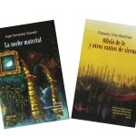
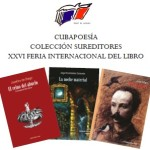

Proyectos de Cubapoesía

Publicaciones recientes
-
presentaciones de sureditores. sabado 11 de febrero 9 febrero, 2017
-

-
presentaciones de sureditores. viernes 10 de febrero 8 febrero, 2017
-

-
gustavo pereira poemas inéditos 5 febrero, 2017
Declaraciones
la humanidad contra el golpe en brasil
[Español|English] Los abajo firmantes, intelectuales, artistas, escritores e investigadores del mundo entero, denunciamos el golpe en curso en Brasil y nos solidarizamos con la presidenta Dilma Rousseff, elegida por 54 millones de brasileros hace sólo un año y medio. No […]
declaración del pen argentina
Febrero 1, 2016 El Centro PEN Argentina, rama de PEN Internacional con sede en Londres, atento a su lema Por la libertad y la responsabilidad de la palabra, cumple en expresar su profunda inquietud por la situación que están atravesando […]
mensaje de la red en defensa de la humanidad-cuba ante la cop 21,parís 2015
En la Conferencia Mundial de los Pueblos sobre Cambio Climático y Defensa de la Vida, celebrada en Tiquipaya, Bolivia, del 10 al 12 de octubre de este año, los allí presentes adoptaron la decisión de retomar por su vigencia,- y […]
Testimonios
Origen y esencia
El Festival internacional de Poesía de la habana surgió en 1996 con el auspicio del Instituto Cubano del Libro, la Oficina del Historiador de la Ciudad, la Unión de Escritores y Artistas de Cuba y el Proyecto Cultural Sur, en cuya propia proyección latinoamericana ha tenido mucha influencia el evento anual de Cuba. El festival de Poesía so dotó de una red en sesenta ciudades de América Latina, Estados Unidos y Europa y cuenta en la actualidad con un grupo de apoyo internacional que permitió la realización de 800 lecturas en más de 400 ciudades de todo el mundo en mayo de 2010.
El Festival de Poesía de la Habana constituye un espacio idóneo no solo para la búsqueda de un público, la promoción de la poesía y la acción ciudadana de los poetas, sino para echar a andar estrategias de participación, articular relaciones más estrechas con asociaciones extranjeras afines, estructurar dinámicas promocionales en un contexto que no puede desconocer importancia de la comunicación y el intercambio, la utilidad del cultivo de los sentimientos, los valores humanistas y el ejercicio de pensar críticamente un mundo en el que para transformarlo son imprescindibles las armas del juicio que, como decía José Martí , el mayor de los cubanos, vencen a las otras.
Historia
- Galería de Fotos, videos, etc